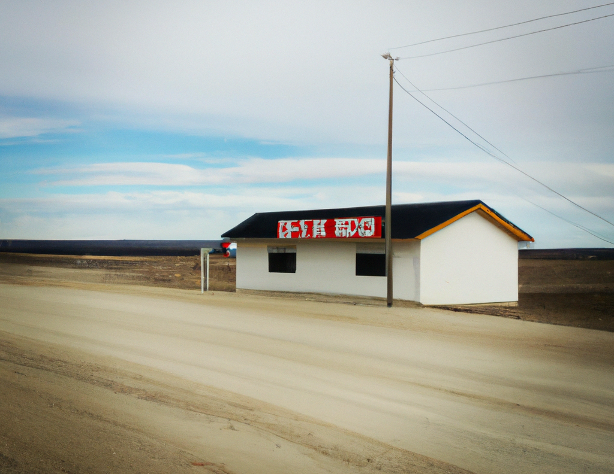
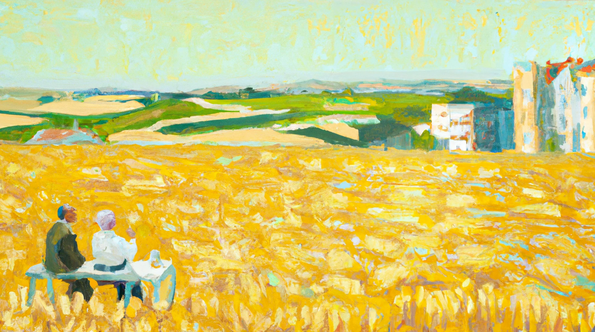
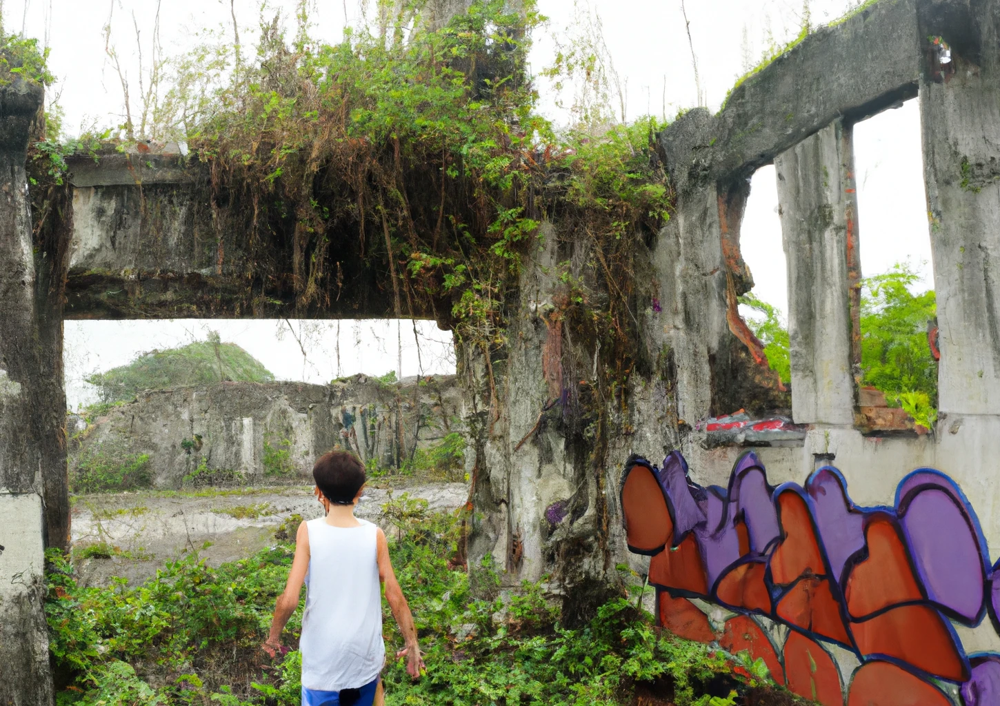

NON / FICTION
⬤ DEVELOPING
One must imagine Jones happy
Imagine, if you will, that Black is a quite nifty (and even generally nice) neurosurgeon. But in performing an operation on Jones to remove a brain tumor, Black inserts a mechanism into Jones’s brain which enables Black to monitor and control Jones’s activities. Jones, meanwhile, knows nothing of this. Black exercises this control through a sophisticated computer which he has programmed so that, among other things, it monitors Jones’s voting behavior. If Jones were to show any inclination to vote for Bush, then the computer, through the mechanism in Jones’s brain, intervenes to ensure that he actually decides to vote for Clinton and does so vote. But if Jones decides on his own to vote for Clinton, the computer does nothing but continue to monitor—without affecting—the goings-on in Jones’s head.
— John Martin Fischer
1. The Cigarette Store
8 December 2022
A.I. art by DALL-E 2
Stale. The color of your eyes are stale. You are my __. I don't know who you are. You just appeared, and we are together. But you are familiar to me. I noticed your eyes and they were familiar, friendly. We are at a school, a school that is there and not there. Time is stopped, and meaningless, and the people walk around soullessly. The air has a dull tinge. Yellow, like a faded picture. There is a cigarette store next to the school. I do not smoke. But you insist, so we go inside. White, white, more white. Marlboros, Juuls. I think about smoking. I think about the flame I will breathe in, and the smoke I will breathe out.
I want to be you. You say, “I want to be you.” And I say back, “I want to be you.” And we stare at each other for the longest time, as if to switch places. But that isn’t possible. Even here. So we seek solace in each other’s presence, each other’s smoke from the long draws we take from our cigarettes.
Finally, you say something. “I think we will meet again.”
“Why?”
“I think we will meet again.” You smile. Beaming. The sun sets one side of your face ablaze, and your skin glows a golden brown. “Do you know who I am?”
“I do.”
“Good.” You start to fade. “Good. …”
“Are you coming back?”
Just me now. The wind wooing, whistling. The soulless people are also gone, left while I wasn’t looking. I’m lost. I want to go home. I want a purpose. I need a purpose.
I walk to the cigarette store.
There is no one manning the store. I grab a pack off the shelves and flick my lighter. I can see beyond the school, an endless landscape of orange hills and red plains, fading into the horizon, then to black. I cannot move. I can only watch, and smoke, as the world leaves me behind.
2. The Hand We Were Dealt
18 December 2022
A.I. art by DALL-E 2
“This field seemed much bigger when we were younger.”
“Yeah.”
You and I, we’re sitting together and eating lunch, as we always did together for the last forty years. It would feel like we’ve been doing this forever, if it weren’t for the creases on your skin betraying the passage of time. I look at you, and you look at me.
“Do you miss the way things were?”
Years ago, this field was the only interesting thing around for miles. Then came the apartments, and the stores, and the cars, and the capitalism. We were told it was a good thing. Now everything is so small, and so large, and the world is nothing but yellow and white, and everything feels a little bit colder.
But you shudder at the question. “The war is over. We have money. And we have our kids.” It took a fortune and a broken back, but they all made it through college. We did everything right, you and I. “We’re okay now. And I like being okay.”
“I guess so.” I finish my half of the meal, and I lie down. Even eating is a tiresome thing nowadays. “But do you think … I don’t know, maybe things could have been different?”
“How?”
“If we’d been born rich, or married rich, or maybe if we’d moved to America,” I say. We laugh. “We could have enjoyed ourselves while we could. Now it’s just too late. We’re too weak, and we’re always too tired.” All that’s left is for us to die. I don’t say that.
“All that’s left is for us to die,” you say.
“Yeah.” You laugh again, quieter this time.
“This is the hand we were dealt.” You’re also done eating. “We were too busy trying to survive, and we did that. And I’m happy we did that. Aren’t you?”
“Yeah.”
“Then that’s that.”
You reach for my hand. And I reach for yours. The wood chars, and the wind blows, but still our fire burns.
“Let’s go home.”
“Okay.”
“Okay.”
In other words, we can make moral choices within G‑d’s story. G‑d’s plans, after all, can unfold in innumerable ways. But it is the Creator, not us, who decides what that story is. As Rabbi Chanina, an ancient sage of the Mishnah, taught, “All is in the hands of heaven, except for the awe of heaven.”
— Tzvi Freeman
3. The Last Boy on Earth
29 December 2022
A.I. art by DALL-E 2
Generated by ChatGPT and lightly edited.
The world had come to an end, brought down by a nuclear war that had wiped out almost every living thing. The boy had been just a child when it happened, but he could still remember the bright flash of light and the deafening roar that had signaled the end of the world as he knew it.
He had survived by sheer luck, huddled in an underground shelter with his family as the bombs fell. When they emerged, they found a world transformed, a landscape of ash and rubble where once there had been cities and towns. His family had searched for other survivors, but they had found none.
As the boy wandered the ruins, he couldn't help but wonder what the point of it all was. Why had he survived when so many others had not? Was there any meaning to be found in this ruined world, or was it all just an empty, meaningless existence?
He began to contemplate the idea of death, wondering if it might not be a mercy to simply end it all and join the countless others who had already passed on. But even as he entertained these thoughts, he found himself unable to give up. He couldn't shake the feeling that there had to be more to life than this, that there had to be some reason why he was still alive.
And so he kept moving forward, scavenging for food and supplies and always searching for some kind of meaning. He encountered all sorts of dangers in his journey - mutated creatures, radiation-scorched land, and the ghosts of the past.
But he also found beauty in the ruins, glimpses of the world that had once been. He discovered libraries and museums, filled with the knowledge of ages past. He climbed to the tops of towering skyscrapers, gazing out at the ruins spread out before him.
And as he journeyed, the boy began to understand that the world was more than just a place of destruction. It was a place of hope and possibility, a place where he could find meaning and purpose.
He knew that he couldn't stay in one place forever, that he had to keep moving forward. And so he set out on a new journey, traveling to the very end of the world.
He crossed vast deserts and frozen tundras, braving all manner of dangers. He climbed mountains and descended into underground caverns. He sailed the seas and flew through the skies.
And at last, he reached the end of the world, a place where the earth seemed to drop off into infinity.
He stood at the edge, gazing out at the endless void before him, and he knew that his journey had just begun. For even at the end of the world, there was still so much to explore, so much to discover.
The boy took a deep breath and closed his eyes, letting the wind brush against his face. He could feel the weight of the world on his shoulders, but he also felt a sense of determination — and hope.
This is it,
he said to himself. This is the end of the world. But it's also a new beginning. I'm the only one left, but that doesn't mean I'm alone. I have myself, and that's all I need. I can create my own future, my own destiny. I just have to keep moving forward, keep exploring and learning and growing. There's still so much out there to discover, so much to learn and experience. And I'm going to do it, no matter what. I'm going to keep going, keep living, until the very end.
With a smile on his face and a glint in his eye, the boy stepped out into the unknown, ready to forge his own path and create a new future for himself in a world that had been shattered by war.
If an individual's thoughts and behaviors can be manipulated and controlled by an external force, does that individual truly have the ability to make their own decisions and choices? Is free will an illusion, or is it a real and inherent aspect of human nature?
— ChatGPT
■